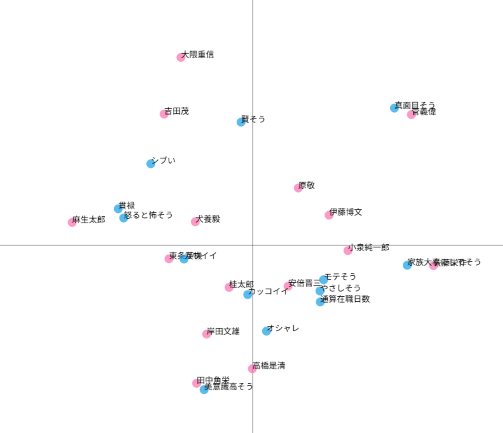
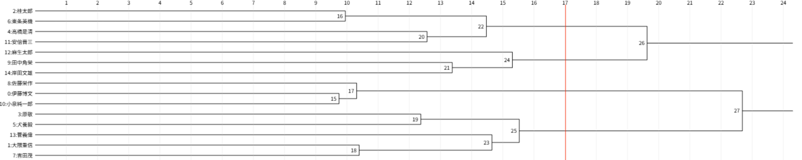
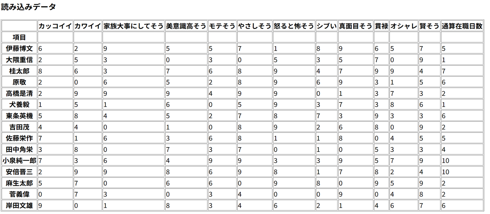

コレスポンデンス分析,クラスター分析
[散布図]


累積寄与率14.83%
[csvファイル]

クロス集計表のcsvファイルが破損してしまいました。申し訳ございません。
[説明]
本当に顔だけで判断させていただきました。コレスポンデンス分析に関しては累積寄与率こそ低かったものの、うまく特徴によって散らばった図になったと思います。
特に「貫禄」「怒ると怖そう」の矢印に突出している麻生太郎様が美しいです。その他、真面目そうな菅義偉様、家族を大事にしてそうな佐藤栄作様など原点から遠い大臣は
我々が偏りすぎたイメージを抱いているということがよくわかります。クラスター分析に関しても2~3人のグループに分類したら素晴らしい偏見グループができました。特に、
美意識高そうな二人組の田中角栄様と岸田文雄様のグループが美しい。怖そうな麻生様と真面目そうな菅様はどこのグループにも属していないところにもグッときました。
この結果、なぜか納得できてしまいませんか?それでも私は声を大にして言いたい。「人を見た目で判断するのはやめておきましょう」ということを。